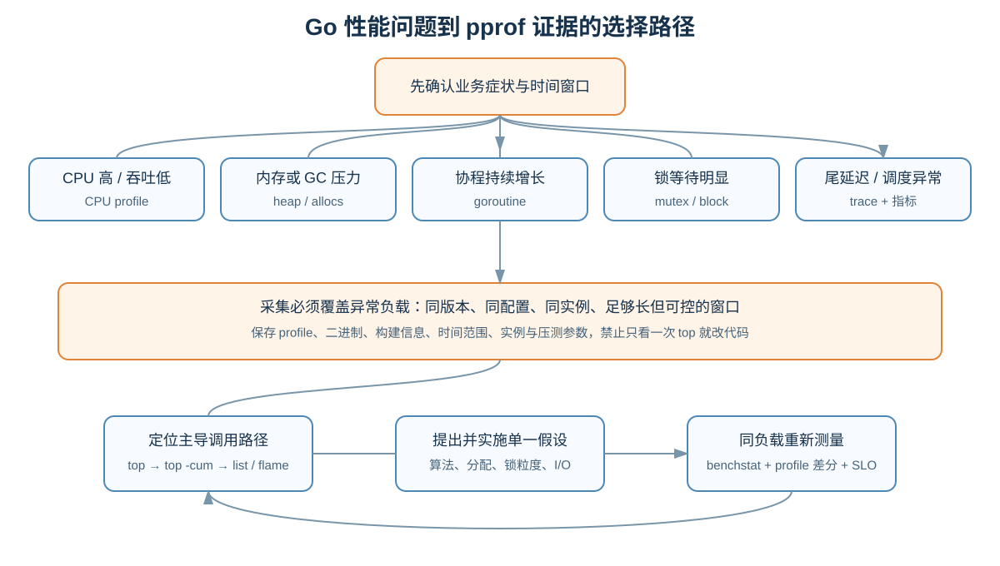
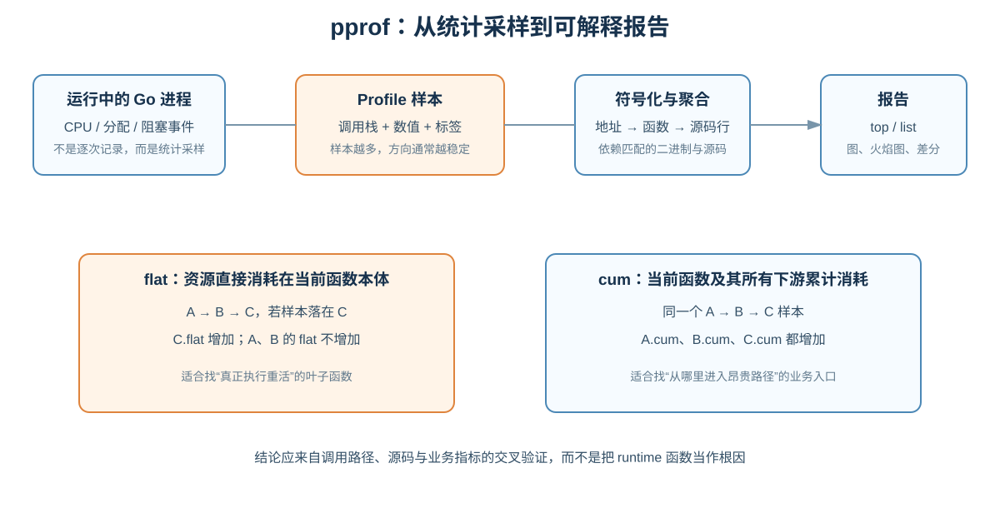
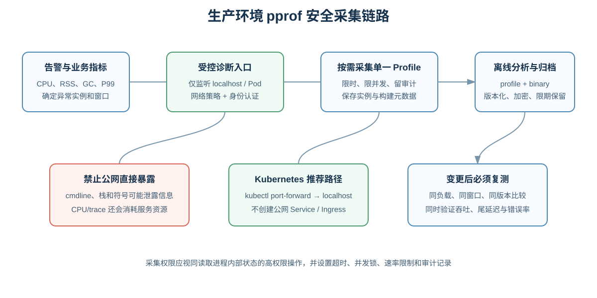

Go pprof 最佳实战：从开发诊断到生产调优
pprof不是“生成一张火焰图”的工具，而是一套统计采样、符号化、聚合、过滤和对比性能数据的方法。真正可靠的调优必须形成闭环：定义问题 → 复现负载 → 采集正确的 profile → 解释调用路径 → 修改一个关键因素 → 在相同条件下复测。本文以现代 Go 工具链为背景。不同 Go 版本可能增加 profile 类型或调整实现细节，生产使用前应以当前版本的
net/http/pprof、runtime/pprof文档为准。
目录
- 1. pprof 能解决什么问题
- 2. 采样模型与 flat、cum
- 3. Profile 类型速查
- 4. 开发阶段接入
- 5. Benchmark 与离线程序采集
- 6. go tool pprof 完整操作
- 7. CPU 瓶颈定位
- 8. 内存、分配与 GC 调优
- 9. Goroutine 泄漏定位
- 10. Mutex 与 Block 竞争定位
- 11. 线程、调度和尾延迟
- 12. Profile 标签与业务维度
- 13. Profile 差分与优化验证
- 14. 生产环境安全接入
- 15. Kubernetes 采集方案
- 16. 常见误判与高级技巧
- 17. 标准排障剧本
- 18. 生产检查清单
1. pprof 能解决什么问题

先根据症状选证据，不能习惯性只抓 CPU：
| 症状 | 首选证据 | 要回答的问题 |
|---|---|---|
| CPU 高、吞吐下降 | profile |
CPU 时间消耗在哪条调用路径 |
| RSS/堆持续增长 | heap + 两个时间点差分 |
哪些仍存活的对象在增长 |
| GC 频繁、CPU 花在 GC | allocs / heap -alloc_space |
谁在制造大量短命对象 |
| goroutine 数持续增长 | goroutine |
哪类栈不断累积、为什么不能退出 |
| 锁竞争、CPU 利用不足 | mutex |
谁持锁使其他 goroutine 等待 |
| channel、锁、WaitGroup 阻塞 | block |
goroutine 在哪里发生阻塞 |
| OS 线程异常增长 | threadcreate |
哪些调用路径触发线程创建 |
| P99 抖动、调度/GC 时序问题 | go tool trace |
某段时间内 goroutine 如何被调度 |
pprof 擅长回答“资源归属于哪些调用栈”，但它不能单独说明：
- 用户请求为何跨多个服务变慢：结合分布式 tracing。
- CPU 为何被容器节流：结合 cgroup 指标、
container_cpu_cfs_throttled_*。 - RSS 为何高于 Go heap：结合
runtime/metrics、/proc、mmap、cgo 和系统工具。 - 某个瞬间的运行时调度因果：使用 execution trace。
2. 采样模型与 flat、cum

pprof profile 本质上是若干样本，每个样本通常包含：
- 一条调用栈；
- 一个或多个数值，如 CPU 时间、对象数、字节数、阻塞纳秒；
- 可选标签，如租户、接口或任务类型。
它是统计采样，不是每次事件的完整审计。短任务或稀有路径可能没有被采到；采样窗口太短时，排名容易抖动。应让目标工作至少运行数秒，线上 CPU profile 通常取 15～30 秒，并重复采集验证稳定性。
假设调用链为 HTTPHandler → Encode → json.Marshal：
flat：函数自身直接消耗，不包含被调函数。json.Marshal很高，说明重活在这里执行。cum：函数自身及全部下游的累计消耗。HTTPHandler的flat可能接近零，但cum很高，说明它是昂贵路径的业务入口。
top 找叶子热点，top -cum 找入口，再用 list 和调用图连接两者。看到 runtime.mallocgc、runtime.gcBgMarkWorker、sync.(*Mutex).Lock 时，不要把 runtime 当根因，要沿调用栈回到业务分配点、共享状态或算法。
3. Profile 类型速查
| 类型/端点 | 默认含义 | 关键参数与前置条件 |
|---|---|---|
/profile |
指定窗口内 CPU 样本 | seconds=N，默认 30 秒 |
/heap |
最近一次 GC 后仍存活对象的分配栈 | gc=1 可先强制 GC；支持 seconds=N 差量 |
/allocs |
从进程启动以来的累计分配 | 适合找分配吞吐；支持差量 |
/goroutine |
当前全部 goroutine 栈 | debug=1/2 可读文本，debug=2 常用于现场看栈 |
/mutex |
造成其他 goroutine 等待的持锁/解锁栈 | 先调用 runtime.SetMutexProfileFraction |
/block |
发生同步阻塞的位置 | 先调用 runtime.SetBlockProfileRate |
/threadcreate |
导致创建 OS 线程的栈 | 关注 cgo、阻塞 syscall、LockOSThread |
/trace |
运行时执行事件 | seconds=N，用 go tool trace 分析 |
/cmdline、/symbol |
命令行和地址符号化辅助接口 | 具有信息泄露风险 |
3.1 四种内存视角
同一个 heap profile 可以切换四个 sample_index：
| 视角 | 含义 | 典型用途 |
|---|---|---|
inuse_space |
当前存活字节数，默认 | 大对象保留、缓存膨胀、内存泄漏 |
inuse_objects |
当前存活对象数 | 海量小对象、对象级泄漏 |
alloc_space |
历史累计分配字节数 | 分配速率、GC 压力、复制开销 |
alloc_objects |
历史累计分配对象数 | 高频小对象、装箱和临时结构 |
heap 不是 RSS。Go heap 之外还可能有 goroutine 栈、runtime 元数据、二进制映射、共享库、cgo 内存和内核缓冲。inuse_space 高说明 Go 对象仍可达；alloc_space 高但 inuse_space 低说明对象大多已回收，问题更可能是分配吞吐和 GC 成本，而非泄漏。
4. 开发阶段接入
4.1 最短接入方式
仅适合本地开发，并且业务已使用默认 http.DefaultServeMux：
import (
"log/slog"
"net/http"
_ "net/http/pprof"
)
func startDebugServer() {
go func() {
err := http.ListenAndServe("127.0.0.1:6060", nil)
if err != nil {
slog.Error("pprof server stopped", "error", err)
}
}()
}
net/http/pprof 通过副作用把 /debug/pprof/ 注册到默认 mux。自 Go 1.22 起这些端点要求使用 GET。生产代码不建议采用这种隐式注册，因为它可能意外出现在业务监听端口。
4.2 推荐的显式独立管理端口
package diagnostics
import (
"context"
"errors"
"log/slog"
"net"
"net/http"
"net/http/pprof"
"runtime"
"time"
)
type Server struct {
httpServer *http.Server
}
func New(address string, enableContentionProfiles bool) *Server {
mux := http.NewServeMux()
mux.HandleFunc("GET /debug/pprof/", pprof.Index)
mux.HandleFunc("GET /debug/pprof/cmdline", pprof.Cmdline)
mux.HandleFunc("GET /debug/pprof/profile", pprof.Profile)
mux.HandleFunc("GET /debug/pprof/symbol", pprof.Symbol)
mux.HandleFunc("GET /debug/pprof/trace", pprof.Trace)
for _, name := range []string{
"allocs", "block", "goroutine", "heap", "mutex", "threadcreate",
} {
mux.Handle("GET /debug/pprof/"+name, pprof.Handler(name))
}
if enableContentionProfiles {
// 1 表示记录每个事件，开销较高；生产应先压测再选择更稀疏的采样率。
runtime.SetBlockProfileRate(1)
runtime.SetMutexProfileFraction(5)
}
return &Server{httpServer: &http.Server{
Addr: address,
Handler: mux,
ReadHeaderTimeout: 5 * time.Second,
ReadTimeout: 65 * time.Second, // 必须大于允许的 CPU profile 窗口
WriteTimeout: 65 * time.Second,
IdleTimeout: 60 * time.Second,
}}
}
func (s *Server) Run() error {
listener, err := net.Listen("tcp", s.httpServer.Addr)
if err != nil {
return err
}
err = s.httpServer.Serve(listener)
if errors.Is(err, http.ErrServerClosed) {
return nil
}
return err
}
func (s *Server) Shutdown(ctx context.Context) error {
return s.httpServer.Shutdown(ctx)
}
func Start(ctx context.Context) {
server := New("127.0.0.1:6060", true)
go func() {
if err := server.Run(); err != nil {
slog.Error("diagnostics server stopped", "error", err)
}
}()
go func() {
<-ctx.Done()
shutdownCtx, cancel := context.WithTimeout(context.Background(), 5*time.Second)
defer cancel()
if err := server.Shutdown(shutdownCtx); err != nil {
slog.Error("diagnostics server shutdown failed", "error", err)
}
}()
}
关键点：
- 诊断端口与业务端口分离，默认监听
127.0.0.1。 - 显式注册端点，便于认证、网络策略和审计。
- CPU profile 是长请求，
WriteTimeout不能小于采样时长。 - block 的参数是平均每多少纳秒阻塞时间采一个样本；
1记录全部阻塞事件，0关闭。 - mutex 参数
rate约平均每rate个竞争事件采一个；1全采，0关闭。 - 竞争采样有开销，不应未经压测永久全量开启。
4.3 验证端点
curl http://127.0.0.1:6060/debug/pprof/
curl "http://127.0.0.1:6060/debug/pprof/goroutine?debug=1"
go tool pprof "http://127.0.0.1:6060/debug/pprof/profile?seconds=20"
5. Benchmark 与离线程序采集
5.1 对 benchmark 采集
go test ./internal/codec \
-run '^$' \
-bench '^BenchmarkEncode$' \
-benchmem \
-count=5 \
-benchtime=3s \
-cpuprofile=cpu.out \
-memprofile=mem.out \
-mutexprofile=mutex.out \
-blockprofile=block.out
-run '^$' 跳过普通测试；-count 适合后续用 benchstat 判断噪声。profile 会增加开销，因此基准数值与 profile 分析最好分两次跑：一次不采 profile 得到可信耗时，一次延长负载用于定位热点。
5.2 独立 CLI/批处理程序
f, err := os.Create("cpu.pprof")
if err != nil {
return fmt.Errorf("create cpu profile: %w", err)
}
defer f.Close()
if err := pprof.StartCPUProfile(f); err != nil {
return fmt.Errorf("start cpu profile: %w", err)
}
defer pprof.StopCPUProfile() // 会等待缓冲数据写完
runWorkload()
内存快照：
runtime.GC() // 仅在明确需要“当前存活对象”快照时调用
f, err := os.Create("heap.pprof")
if err != nil {
return err
}
defer f.Close()
return pprof.WriteHeapProfile(f)
不要在正常请求路径频繁 runtime.GC()；它会改变被观测系统。一个进程同一时间只能进行一次 CPU profile。
6. go tool pprof 完整操作
6.1 采集与启动 Web UI
curl -o cpu.pprof "http://127.0.0.1:6060/debug/pprof/profile?seconds=30"
curl -o heap.pprof "http://127.0.0.1:6060/debug/pprof/heap?gc=1"
go tool pprof -http=127.0.0.1:0 cpu.pprof
go tool pprof -http=127.0.0.1:0 -sample_index=alloc_space heap.pprof
-http=127.0.0.1:0 让系统选择空闲端口。Web UI 可查看 Graph、Flame Graph、Top、Source 和 Peek。Graphviz 是生成部分图形报告所需的外部依赖。
6.2 交互命令
top # 按 flat 排序
top -cum # 按累计成本排序
top 30 # 展示前 30 项
list Encode # 正则匹配函数，显示逐行源码成本
weblist Encode # 源码与汇编结合
peek Handler # 看调用者与被调用者
tree # 文本调用树
traces # 展开原始样本栈，输出可能很大
tags # 查看 profile 标签分布
focus=my/module # 仅保留包含该正则的调用栈
ignore=runtime # 排除匹配路径，仅用于降噪，不能代替根因分析
help
典型 top 列：
flat flat% sum% cum cum% name
sum%是当前列表自上而下的flat%累计值，不是函数的累计成本。Dropped Nodes表示图为可读性裁剪了节点，不代表样本丢失；调低阈值或使用nodecount。list无法显示源码时，应提供采集时对应的二进制和源码；容器构建应保留构建产物与 build ID。
6.3 非交互报告
go tool pprof -top cpu.pprof
go tool pprof -top -cum cpu.pprof
go tool pprof -list='Encode|Marshal' cpu.pprof
go tool pprof -svg -output=cpu.svg cpu.pprof
go tool pprof -sample_index=inuse_objects -top heap.pprof
7. CPU 瓶颈定位
7.1 标准步骤
- 确认 CPU 真正繁忙，而不是容器节流或宿主机争用。
- 在异常负载持续期间采集 15～30 秒，必要时采三次。
top找直接消耗，top -cum找业务入口。- 用 Flame Graph 沿“宽”路径向下钻取。
list 函数名定位到源码行，检查算法、序列化、正则、复制、哈希和分配。- 修改后在相同负载、实例规格和 Go 版本下重测。
火焰图中：
- 每个框代表函数；宽度代表该函数出现在样本中的比例。
- 纵向表示调用关系，不代表时间轴。
- 顶部宽框通常是直接执行热点；底部宽框通常是入口或公共框架。
- 颜色通常不代表“更慢”，不要按颜色判断热点。
7.2 常见热点与行动
| 热点 | 常见原因 | 优先检查 |
|---|---|---|
runtime.mallocgc / GC worker |
高频分配导致 GC | alloc_space、逃逸分析、容量预估 |
encoding/json / 反射 |
序列化和动态类型 | 是否重复编码、字段模型、替代协议前先 benchmark |
| map 哈希函数 | 大量 map 查找 | 算法复杂度、是否可用切片/索引、键类型 |
runtime.memmove |
大量复制 | 字节转换、切片扩容、重复拼接 |
| regexp | 复杂匹配或重复编译 | 预编译、缩小输入、改为专用解析 |
| syscall/cgo | 内核或外部代码 | pprof 可能不完整，结合 perf、系统指标 |
不要优化 1% 的函数而忽略 40% 的调用路径。Amdahl 定律决定了优化收益受目标路径占比上限约束。
8. 内存、分配与 GC 调优
8.1 判断“泄漏”还是“分配过快”
go tool pprof -sample_index=inuse_space heap.pprof
go tool pprof -sample_index=inuse_objects heap.pprof
go tool pprof -sample_index=alloc_space heap.pprof
go tool pprof -sample_index=alloc_objects heap.pprof
inuse_space随时间单调增长：可能存在对象保留、无界缓存或引用泄漏。alloc_space很高而inuse_space稳定：大量短命对象，重点降低分配率。inuse_objects高、inuse_space不高：大量小对象，元数据与 GC 扫描成本可能突出。- RSS 高但 heap 不高：检查 goroutine 栈、cgo、mmap、文件缓存和内存归还行为。
8.2 两点差分定位增长
curl -o heap-t0.pb.gz "http://127.0.0.1:6060/debug/pprof/heap?gc=1"
sleep 300
curl -o heap-t1.pb.gz "http://127.0.0.1:6060/debug/pprof/heap?gc=1"
go tool pprof -http=127.0.0.1:0 \
-sample_index=inuse_space \
-base=heap-t0.pb.gz \
heap-t1.pb.gz
gc=1 会影响延迟，仅在可接受的实例上执行。差分显示窗口内净增长，比单张快照更适合找泄漏。仍需在多个时间点重复，排除缓存预热和正常工作集增长。
8.3 典型优化
make([]T, 0, expected)预估容量，避免扩容复制。- 用
strings.Builder/bytes.Buffer替代循环字符串拼接。 - 避免无意义的
string与[]byte往返转换。 - 流式处理大响应，避免一次性读取全部数据。
- 给 map、缓存、队列设置容量、TTL、淘汰和可观测指标。
- 检查大切片的小视图是否仍引用整个底层数组；必要时复制需要保留的小段。
sync.Pool只适合可复用临时对象；它不是缓存，GC 可随时清空，错误使用可能增加常驻内存。- 先优化对象生命周期和算法，再调整
GOGC、GOMEMLIMIT；运行时参数不能修复无界保留。
9. Goroutine 泄漏定位
先监控 runtime.NumGoroutine() 或 /sched/goroutines:goroutines。数量增长只是信号，真正证据是同类栈持续累积：
curl -o goroutine.txt \
"http://127.0.0.1:6060/debug/pprof/goroutine?debug=2"
go tool pprof -http=127.0.0.1:0 \
"http://127.0.0.1:6060/debug/pprof/goroutine"
常见栈状态：
[chan send]：发送端没有消费者、消费者退出或队列无背压策略。[chan receive]：生产者结束但 channel 未关闭，或退出信号没有传播。[select]：缺少ctx.Done()分支，生命周期失控。[semacquire]：锁、WaitGroup 或连接池长时间等待。[IO wait]：网络调用缺少 deadline，连接永不结束。
对比两个时间点的 goroutine profile；如果某个业务栈的数量持续增加，就沿栈找到创建点和退出条件。修复通常不是“减少 goroutine”，而是建立所有权：谁创建、谁取消、谁等待、谁关闭资源。测试中可记录操作前后数量，但必须给 runtime 后台 goroutine 留余量，并优先断言业务 goroutine 能随 context 退出。
10. Mutex 与 Block 竞争定位
10.1 两者不要混淆
mutex栈通常指向Unlock附近，即谁持有锁并导致别人等待。block栈指向发生阻塞的位置，即谁在等待，覆盖 mutex、channel、select、WaitGroup、Cond 等。
curl -o mutex.pb.gz \
"http://127.0.0.1:6060/debug/pprof/mutex?seconds=30"
curl -o block.pb.gz \
"http://127.0.0.1:6060/debug/pprof/block?seconds=30"
go tool pprof -top -cum mutex.pb.gz
go tool pprof -top block.pb.gz
mutex 的累计等待时间可能大于墙钟时间：一个锁持有 1 秒且 5 个 goroutine 同时等待，可累计约 5 秒竞争时间。
优化顺序：
- 缩短临界区，锁内禁止网络、磁盘和慢序列化。
- 降低共享状态，按租户、哈希或 CPU 分片。
- 检查是否把一个全局锁用于互不相关的数据。
- 读多写少时再评估
RWMutex；它并非天然快，写竞争下可能更差。 - 用原子操作或 channel 前先 benchmark，复杂同步常把问题换成其他成本。
11. 线程、调度和尾延迟
threadcreate 适合调查 OS 线程异常增长，但 goroutine 多不等于线程多。常见诱因包括 cgo、长时间阻塞 syscall、频繁 runtime.LockOSThread。
当 CPU profile 没有明显热点，但 P99 抖动明显时，采短 trace：
curl -o trace.out \
"http://127.0.0.1:6060/debug/pprof/trace?seconds=5"
go tool trace trace.out
trace 可观察 goroutine 调度、GC、网络阻塞、syscall、处理器利用率和用户 region。它记录事件更细，文件与开销增长更快，生产窗口应短且受控。诊断资料可能互相扰动；精确 CPU、block 和 trace 最好分开采集。
12. Profile 标签与业务维度
同一个函数服务多个租户或任务时，仅看函数名无法归因。可使用 runtime/pprof 标签：
func Handle(ctx context.Context, tenant, operation string) error {
labels := pprof.Labels(
"tenant", tenant,
"operation", operation,
)
var err error
pprof.Do(ctx, labels, func(ctx context.Context) {
err = execute(ctx)
})
return err
}
分析：
go tool pprof -tags cpu.pprof
go tool pprof -tagfocus='operation=export' cpu.pprof
go tool pprof -http=127.0.0.1:0 -tagfocus='tenant=tier-premium' cpu.pprof
当前标签主要被 CPU 和 goroutine profile 使用。标签值必须低基数，禁止放 user ID、request ID 等无限增长维度，也不要写入敏感数据。pprof.Do 内启动的 goroutine 会继承标签；手工切换 goroutine 标签时才考虑更底层的 SetGoroutineLabels。
13. Profile 差分与优化验证
13.1 两种差分
# 比较优化前后两个独立窗口，可能出现负值
go tool pprof -diff_base=before-cpu.pb.gz after-cpu.pb.gz
# 累计 profile 的时间差，例如同一进程先后两个 heap/allocs 快照
go tool pprof -base=heap-t0.pb.gz heap-t1.pb.gz
-diff_base适合“版本 A 与版本 B”；负值表示新版本在该路径减少。-base适合从后一个累计 profile 中减去同进程较早快照。- 两份 profile 必须类型兼容；负载、时长、实例规格和采样设置也应一致。
-normalize可归一化总样本后比较占比，但可能掩盖“总 CPU 已整体上升”，必须同时看绝对业务指标。
13.2 完整验证标准
一次优化只有同时满足以下条件才可接受：
- benchmark 多轮结果具有统计意义；
- CPU/分配/竞争 profile 中目标路径确实下降；
- 生产式压测下吞吐、P95/P99、错误率符合目标；
- 没把 CPU 换成内存、把平均延迟换成尾延迟；
- 代码复杂度、正确性和可维护性代价可接受。
14. 生产环境安全接入

/debug/pprof 可能暴露命令行参数、包名、函数名、源码路径、goroutine 栈和内部拓扑；CPU profile 与 trace 还可消耗服务资源。它应被视为高权限诊断接口。
生产要求：
- 只监听 loopback、Unix socket 或受控管理网络，禁止直接配置公网 Ingress。
- 使用独立端口、mTLS/身份代理、网络策略和最小权限。
- 限制采集时长、请求并发和频率；同一实例同一时间只采一个重型 profile。
- 记录操作者、实例、类型、起止时间和工单，敏感 profile 加密并设置保留期。
- 自动采集随机少量副本，避免同时冲击整个服务。
- 采集前观察实例余量，采集中监控错误率与 P99，异常立即停止。
- 保存
profile + 精确二进制 + Go 版本 + commit/build ID + 配置摘要 + 负载信息。
一个简单的 HTTP Basic Auth 不是充分边界，尤其当入口仍暴露在公网。认证应位于成熟的管理平面或 sidecar 代理中；应用内中间件还应增加超时、并发信号量和审计。
15. Kubernetes 采集方案
推荐不创建对外 Service，直接端口转发：
kubectl -n payments get pods -l app=payment-api
kubectl -n payments port-forward pod/payment-api-7d9c 6060:6060
curl -o payment-cpu.pb.gz \
"http://127.0.0.1:6060/debug/pprof/profile?seconds=30"
go tool pprof -http=127.0.0.1:0 payment-cpu.pb.gz
若进程只监听 127.0.0.1:6060，kubectl port-forward pod/... 通常可用于访问 Pod 内端口；具体取决于集群实现和网络限制。大规模持续剖析可采用集中式 continuous profiling 平台，但仍需控制采样、标签基数、数据权限和保留周期。
容器调查必须同步记录：
kubectl -n payments top pod payment-api-7d9c --containers
kubectl -n payments describe pod payment-api-7d9c
CPU 达到 limit 可能是节流而非代码热点；发生 OOMKill 时，上一进程的 HTTP profile 已不可取，应在告警阶段提前采集，或由平台周期性保存 profile。
16. 常见误判与高级技巧
- 只看一次 5 秒 profile：样本太少。延长稳定负载并重复采集。
- 把 flat 最高当唯一根因：库函数只是执行点；结合
cum找业务入口。 - 看到内存高只看 allocs：泄漏应先看
inuse_*和时间差；GC 压力看alloc_*。 - 强制 GC 后认为生产常态如此：
gc=1改变现场；同时保留未强制 GC 的快照和运行时指标。 - 用百分比比较不同总量：10% of 100 cores 比 30% of 10 cores 更大；看绝对值和吞吐。
- profile 与二进制不匹配：源码行、内联和符号会失真；按 build ID 归档。
- 调试构建替代生产构建：
-N -l会改变内联和性能，仅用于调试器，不应用于生产 profile。 - 忽视内联：必要时使用
-noinlines辅助归因，但最终仍以生产构建为准。 - 忽视采样开销：先在压测环境量化每类 profile 的 CPU、延迟和文件增长。
- 直接调 GOGC 掩盖分配问题：先减少分配；再依据内存预算权衡 GC CPU 与堆空间。
PGO 可使用代表性生产 CPU profile：
cp representative-cpu.pprof default.pgo
go build -pgo=default.pgo ./cmd/server
PGO 不是手工调优替代品。profile 必须覆盖代表性负载；构建后仍要 benchmark、压测并验证二进制版本。过于偏向单一接口的 profile 可能让其他工作负载退化。
17. 标准排障剧本
剧本 A：CPU 90%，QPS 下降
- 排除 cgroup throttling，确认负载持续。
- 抓 30 秒 CPU profile，同时记录 QPS/P99。
top、top -cum、Flame Graph、list定位路径。- 若
mallocgc/GC 高，转抓alloc_space。 - 优先修算法、重复计算和大量分配。
- 同条件复测并用
-diff_base对比。
剧本 B：内存每小时增长
- 同一进程在稳定流量下每 5～10 分钟抓
heap?gc=1。 - 用
inuse_space和inuse_objects做相邻差分。 - 检查缓存、map、队列、订阅者、timer、切片底层数组和 goroutine。
- 验证对象增长是否与业务基数一致。
- 修复后长时间 soak test，确认斜率归零或进入稳定平台。
剧本 C：CPU 不高但 P99 很差
- 查下游延迟、连接池、容器节流和运行队列。
- 开启经压测的 mutex/block 采样，分别抓窗口 profile。
- 若无明显竞争，抓 1～5 秒 trace。
- 检查锁内 I/O、连接池等待、channel 背压、GC 和调度空洞。
剧本 D：goroutine 数持续增加
- 每隔数分钟保存 goroutine profile。
- 找数量增长最快的同类栈。
- 检查 context 传播、超时、channel 关闭、响应体关闭和 WaitGroup。
- 加生命周期测试与 goroutine 指标告警。
18. 生产检查清单
接入
- ☐ pprof 使用独立管理端口和显式 mux。
- ☐ 默认只监听 loopback/受控网络，不经公网 Ingress。
- ☐ 具备认证授权、网络策略、超时、限并发和审计。
- ☐ block/mutex 采样率经过压测，可配置和关闭。
- ☐ profile 时长不被 HTTP
WriteTimeout截断。
采集
- ☐ 明确症状、实例、异常时间窗口和成功标准。
- ☐ 一次只采集一个高开销诊断数据。
- ☐ 保存原始 profile、二进制、build ID、Go 版本和负载信息。
- ☐ CPU 窗口足够长，内存泄漏使用多时间点差分。
- ☐ 采集过程中监控服务错误率和尾延迟。
分析与优化
- ☐ 同时看
flat、cum、调用图和源码行。 - ☐ 内存明确选择
inuse_*或alloc_*。 - ☐ 将 runtime 热点追溯到业务调用点。
- ☐ 每次修改对应明确假设，避免一次改多个变量。
- ☐ 用 benchmark、profile 差分和生产式压测共同验证。
- ☐ 检查 CPU、内存、延迟、吞吐、错误率之间的代价转移。
参考资料
- Go 官方 Diagnostics
net/http/pprof官方文档runtime/pprof官方文档- Google pprof 使用手册
- Go Blog：Profiling Go Programs
最可靠的 pprof 使用方式不是背命令，而是始终问四个问题：正在解释哪一种资源？采样覆盖了哪段真实负载？这条调用栈为何产生资源消耗？修改后如何证明整体 SLO 变好？